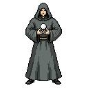
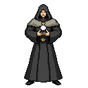
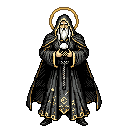
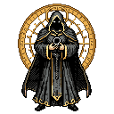
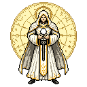

A Centelha Primordial

O Portador do Fogo Sagrado

O Ancião da Esfera

O Senhor das Sombras Cósmicas

A Entidade da Luz Eterna
1–2: vestes simples, sem auréola · 3: auréola · 4–5: auréola e círculo posterior.Conceitos base · PNG 128 × 128 · fundo transparente · clique para ampliar